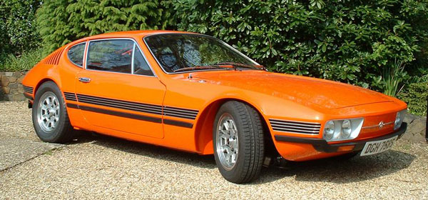
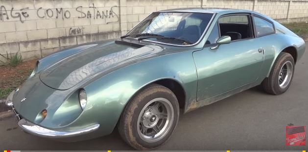
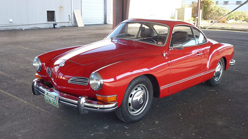

The SP Series was a series of sports vehicles developed by the Volkswagen do Brasil for the domestic market and for most of Latin America, the Canary Islands, Portugal, as well as for some countries in Africa and the Middle East. From 1972 to 1976, the name is supposedly an acronym for São Paulo. Other sources attribute these acronyms to the term Special Project or Sport Prototype.
PUMA

The Puma GTE, the most famous sports “made in Brazil” at the time, was produced with fiberglass body and Volkswagen “boxer” engine mechanic between 1970 and 1980. This model was based on the Puma GT, the letter “E” added to the nomenclature means “export” or “Europe”, according to other sources. This was the more successful model for all and higher-volume production of the brand Puma (8705 units).
Chassis based on the Volkswagen Brasilia, side windows, flashes above the front bumper of the same shape of the headlights.
KARMAN GHIA TC

The Karmann Ghia (Type 14) was a 2 + 2 coupe and a convertible two-seater commercialized by Volkswagen in the period between 1955 and 1974. Both variants designed by Carrozzeria Ghia and assembled by the German body Karmann.
In 1961, Volkswagen presented to the market a variant: the Karmann Ghia Type 34, only available in coupe, with a less rounded style, based on the mechanics of the Volkswagen Type 3, while in Brazil, in 1971 another variant was introduced exclusively for America of the South: the Karmann Ghia TC with an appearance more in keeping with the time.